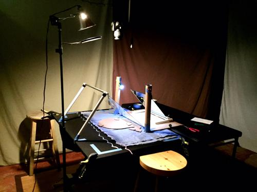

I started this video project in May, 2013… just over a year and a half ago. Full disclaimer though, there were times when I wouldn’t work on it for weeks. Not sure on total hours but put it this way, it took so long that I stopped keeping track of how long it was taking and would almost use that time as a sort-of meditation period; a time when I could zone-out and listen to music and decompress. As tedious as it was, it was oddly relaxing.

The video itself consists of over 4000 individual frames, most of which are at 24 frames per second, but a few that are held much longer. The entire thing was shot on a 2.5’x3.5’ drafting table covered by a black sheet. All of the frames you see are the raw pictures I shot. There are no other post-production effects other than ‘fade-to-black.’
I was inspired to make the video after watching the movie ParaNorman and saw a short documentary on the making of the film. (Great movie!)
The theme of the video is basically, ‘life and death.’ A person is born and consists of the same elements as the world around him – just as we are; he is made of nuts and bolts, we’re made of atoms. He goes on an adventure, meets a friend he becomes very fond of, then returns to the earth he was made from. I added the quote from Carl Sagan because it nicely illustrates the short time we have here on Earth – plus, he’s one of my favorite authors.
The name of the song is simply the date that I wrote and recorded it on. I wasn’t even planning on writing and finishing an entire song when I started, but it only took a few hours to write and record the entire thing – it just kind of happened. It turned out to be one of my favorite songs, I actually kind of like this one. I played all the instruments and recorded it in the recording studio I helped build along with my dad Jeffrey Fisher Sr., cousin Andy Sisinger, and brother-in-law Ian Holmes.
Big thanks to Andy Sisinger for helping with the live shots!